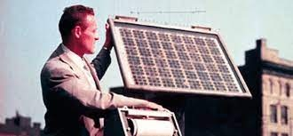

História da energia solar

O Efeito fotovoltaico foi descoberta no século IX, mais especificamente no ano de 1839, pelo físico francês Edmond Becquerel. Contudo foi apenas no ano de 1954, no Bell Telephone Laboratories, localizado nos Estados Unidos, que foi produzida a primeira célula fotovoltaica que conseguia gerar energia para equipamentos elétricos. Só nos anos 2000 que o uso de energia fotovoltaica receberam incentivo com o programa Feed-In Tariff, programa japonês e alemão para o uso de energia renovável, que acontece até os dias de hoje com o desenvolvimento cada vez maior dessa tecnologia.